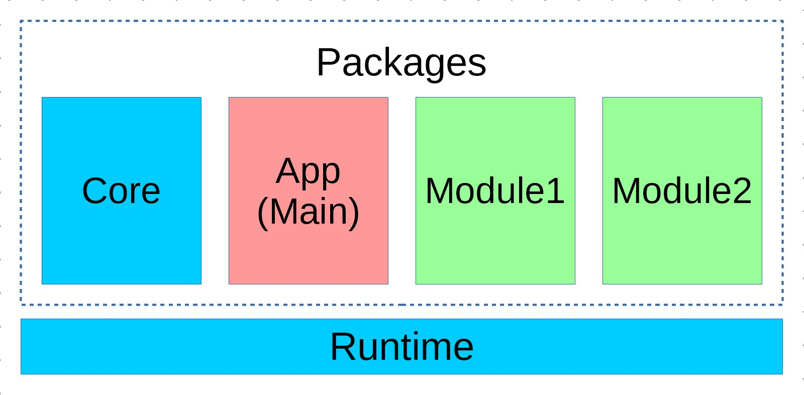

架构简述
- Combi框架的基础结构由一个
Runtime运行时对象，和若干个Package包对象组成。- Runtime与Package在通常情况下均为单件调用。
- 所有Package均注册在作为容器的Runtime对象中。
- 运行具体应用时，需要指定一个Package作为主包
Main Package。- 主包有权覆盖其他Package内的一些代码，比如配置等。

运行时对象
Runtime的单例会在引用框架时创建，引用到的Package也会自动创建，并以包名pid作为键名注册到Runtime中。
Runtime提供了门面方法，可以便捷地获取已注册Package对象。假设访问pid为app的包的代码如下：
use Combi\Core\Runtime as rt;
$package = rt::app();
顶部的use语句是combi框架所推荐的别名方式，除了
rt，之后还会见到core、inner以及helper等别名。 使用脚手架指令生成的类文件会自动建立推荐别名。
Runtime的主要方法
Runtime对象内置了少量方法，在命名包对象pid时，请注意避免下列名称。
| 用例/方法 | 说明 |
|---|---|
rt::isProd() |
是否是生产环境 |
rt::config() |
获取框架基础配置 |
rt::register() |
注册一个包 |
rt::ready() |
启动框架 |
rt::main() |
获取主包对象 |
rt::dir() |
返回某路径的目录对象 |
调用范例：
if (rt::isProd()) {
// do something...
}
包对象 Package
包是构造combi应用的基本颗粒，一个包中会包括代码、配置、资源等业务所需的文件，并通过composer被其他包引用。
一般情况下包对象会在composer载入时自动创建，因此在
composer.json中要注意引用顺序，combi核心库应该放在其他引用包之前。
当开始构建一个新的combi包的时候，需要创建一个门面对象，继承于Package门面基类：
namespace My\Zone;
class Package extends \Combi\Facades\Package
{
protected static $pid = 'my_zone';
}
包的门面对象必须放置于包所在空命空间的根下，否则部分功能可能不能正常工作。
之后，如果包被正确注册到runtime对象中，则可以这样访问到包实例：
$package = rt::my_zone();
推荐以该包所在命名空间，以下划线连接每一级空间名的全小写字母来命名pid
inner别名
使用rt::<package>()来访问包是一种全局路由方式，在包体内编码时会显得太啰嗦。因此引入了门面类的inner别名，推荐在包体内的代码使用inner，通过门面类来访问自身所在包对象。
namespace My\Zone\Models;
use My\Zone\Package as inner;
这样，就可以通过inner门面别名方便地访问包内的配置、服务等资源。和rt一样，框架提供的脚手架会自动生成inner门面别名。
访问Package对象
直接通过Package对象能访问到的资源有以下几种：
- 在配置文件中声明的服务
- 包对象作为容器注册的资源
- 包对象自带的预留方法
访问包内部的服务
先忽略配置服务的细节，可以简单地把服务理解为写在配置文件中，已经封装好依赖关系的可用对象。
如果有一个服务叫mail，并且提供一个create方法，那么通过inner门面访问该方法的代码可能是这样：
$mail = inner::mail()->create();
如果该服务所在包的pid是my_zone，那么在另一个包中使用rt门面访问该方法的代码：
$mail = rt::my_zone()->mail()->create();
使用包容器
可以简单地把包看作一个容器，把包内业务中需要用到的对象/变量等存放进去。
inner::instacne()->timeout = 30;
inner::instacne()->user = new \stdClass();
inner::instance()->handler = function(): \stdClass {
$handler = new \stdClass();
$handler->is_running = true;
return $handler;
};
var_dump(inner::instance()->timeout); // print int(30)
var_dump(inner::instance()->user); // print a std object
var_dump(inner::instance()->handler); // print a std object with proporty is_running
如上所示，除了直接放入变量，包容器支持传递一个闭包，这样只有在第一次访问此属性时才会进行初始化，之后的访问只会返回闭包执行后的结果。
注意，只支持传闭包对象
Closure进行初始化，带__invoke()的对象不会在第一次访问时触发__invoke()方法并替换原对象。
预留方法
Package基类有一些预留方法，这些预留方法不能被用作服务名注册。
| 用例/方法 | 说明 |
|---|---|
inner::instance() |
返回包实例 |
inner::pid() |
返回包的pid |
inner::dir() |
根据配置与路径返回一个资源目录对象 |
inner::dict() |
根据语言包配置获得翻译结果 |
inner::config() |
获取配置 |
inner::path() |
根据配置和路径获取路径字串 |
inner::service() |
获取服务对象 |
包门面的访问优先级
如果直接获取包实例，那么访问包内的服务、容器内资源、以及包自带方法是较为显式的：
$package = inner::instance();
var_dump($package->pid()); // 访问包实例方法
var_dump($package->timeout); // 访问包容器内资源
var_dump($package->mail()); // 访问包内的服务
如果通过门面对象访问，访问容器内资源也会以方法名的形式调用：
var_dump(inner::timeout()); // 这也是访问容器内的timeout
当三者名称存在冲突时，使用门面访问的优先级为：
- 包实例方法
- 容器内资源
- 包内的服务
如果在容器资源名冲突的情况下，可以使用inner::servcie('service_name')来访问服务。
core核心包
combi框架本身的大多数代码也是作为package注册在runtime中的，因此使用脚手架创建文件时，会默认加上core别名，以供方便地访问核心包。
use Combi\Package as core;
echo core::now()->format('Y-m-d H:i:s');
以上代码将输出格式化的当前时间
框架的引导
combi包内的src/目录下的文件一般为框架引导文件，其入口文件建议为bootstrap.php
通过在composer.json中注册自动载入，因此combi包一旦在composer中引用，即会自动载入并初始化。
例如：
"autoload": {
"psr-4": {"My\\Zone\\": "src/classes/"},
"files": [
"src/bootstrap.php"
]
},
bootstrap.php
bootstrap.php作为包的引导入口，一般的内容如下：
namespace My\Zone;
use Combi\Facades\Runtime as rt;
rt::register(Package::instance(__DIR__),
'dependencies', 'hooks', 'helpers', 'business');
调用包门面对象创建包对象的单件，之后通过rt::register()方法将包注册进runtime。register方法后面支持填入多个src/同目录下的php文件名，这样在使用rt::ready()方法启动框架时，会按序载入这些引导文件。
引导文件分类建议
src目录下的其他引导文件，可能会有以下这些类型：
| 文件名 | 作用 |
|---|---|
| dependencies.php | 非DI服务的依赖库初始化 |
| hooks.php | 勾子注册与配置 |
| helpers.php | 辅助方法声明 |
| business.php | 业务层初始化，包括内部路由别名与中间件 |
| routes.php | HTTP路由声明 |
| commands.php | chord指令声明 |
启动框架
在具体应用的入口文件中，可以用以下代码启动combi框架。
use Combi\Core\Runtime as rt;
require __DIR__ . '/../vendor/autoload.php';
rt::ready('app', require __DIR__ . '/../config.php');
以上代码假设位于combi项目的public/目录中，调用了rt::ready()方法，指定了pid为app的包作为主包来启动框架。之后框架的各个模块，以及所载入的包都处于可用状态了。